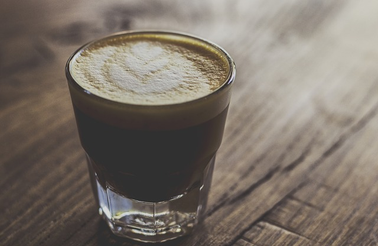
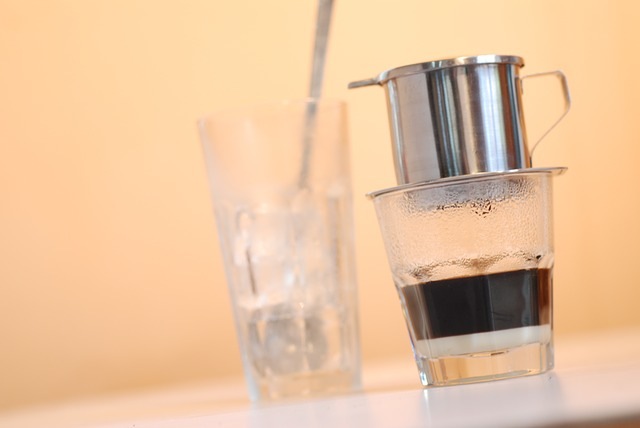
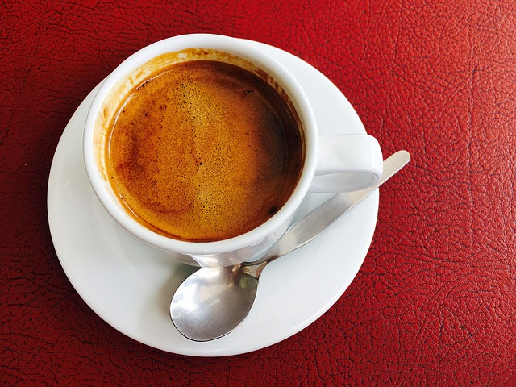
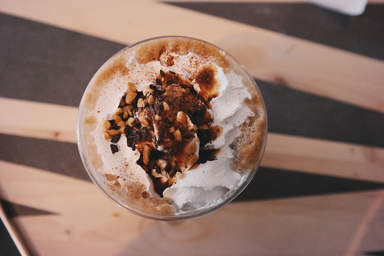

Recipe 1 - Irish Coffee

Ingredients - 1 oz Irish whiskey, 1 tsp brown raw cane sugar, 1 tbsp whipped cream and hot strong coffee to fill the glass
Directions - First add the whiskey in cup. Add the sugar and dissolve in the whiskey. Then add the coffee and stir. Float the whipped cream on top and serve.
Recipe 2 - Vietnamese Iced Coffee

Ingredients - 1 heaping tbsp of Cafe Du Monde, 1-2 tbsp of condensed milk according to your taste, a Vietnamese coffee filter,a glass for the brew and a second glass filled with ice.
Directions - Remove the metal filter and pour in the 1 tbsp of Cafe Du Monde. Twist the filter on gently until it stop turning. Pour hot water and let it drip in first glass. In the second glass add 1-2 tbsp of condensed milk and filled it with ice. Next pour finished dripped hot coffee in second glass. Mix well and enjoy.
Recipe 3 - Cafe Americano

Ingredients - 1 shot espresso coffee, boiling water, steamed milk, 1 raw cane sugar cube.
Directions - Make a shot of espresso coffee and pour it into a 6-ounce cup. Add boiling water into the cup until filled. Pour steamed milk and add a sugar cube.
Recipe 4 - Hazelnut Liqueur Coffee

Ingredients - 1 1/2 ounces Frangelico(Hazelnut flavor liqueur), 1/2 cup hot water, 2 tbsp whipped heavy cream.
Directions - In a mug, stir together the Frangelico and 1/2 cup of hot water. Spoon the whipped cream over the top before serving.